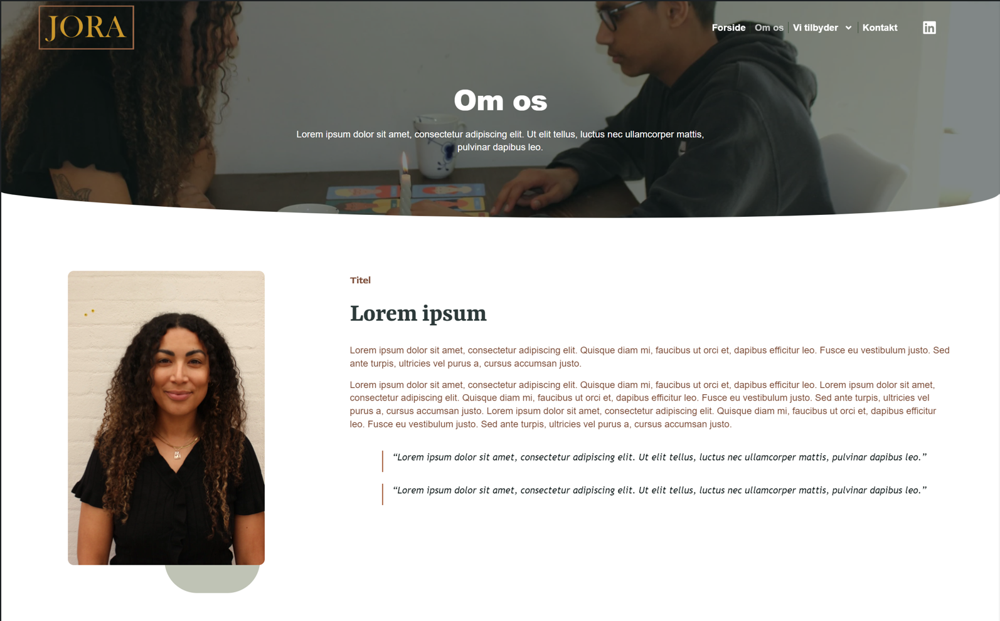
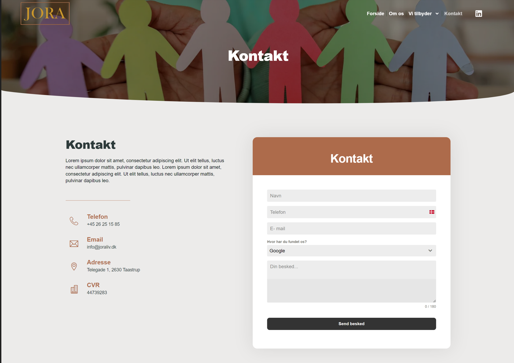
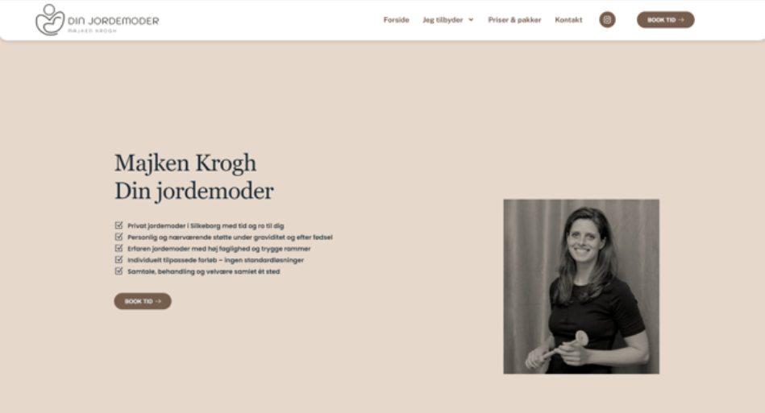
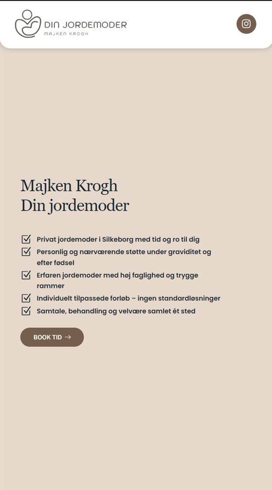
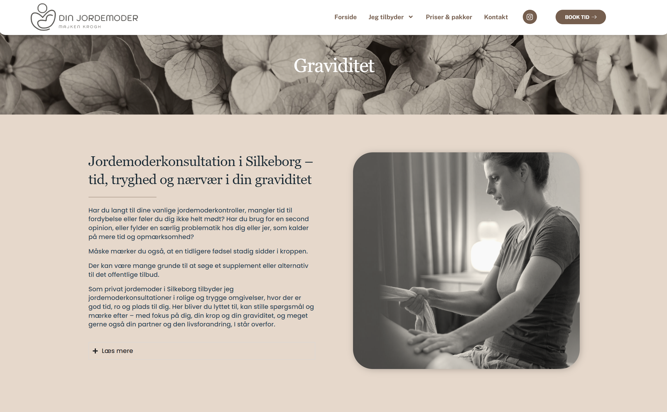
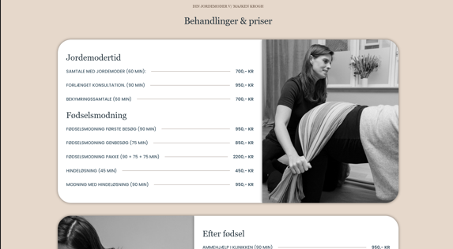
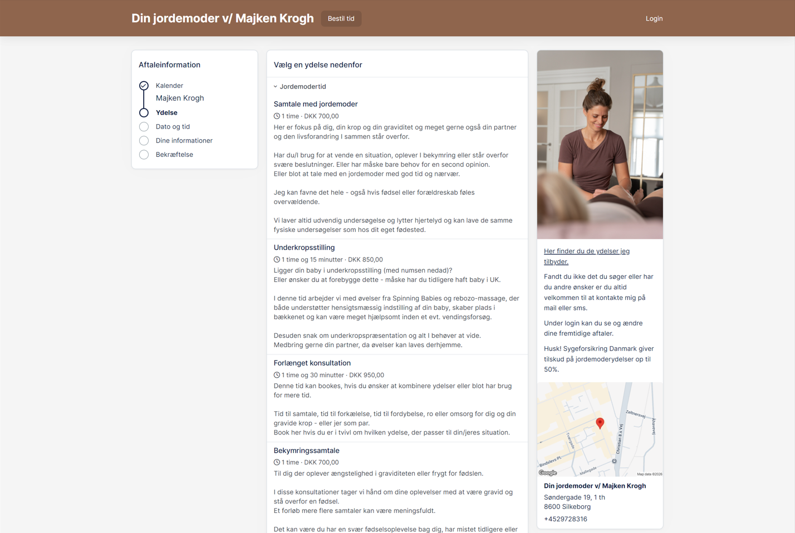
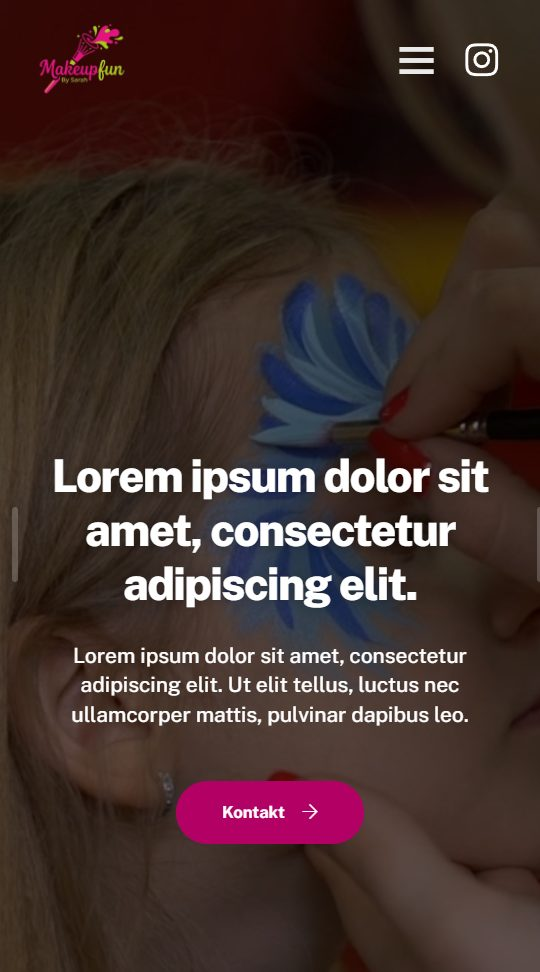
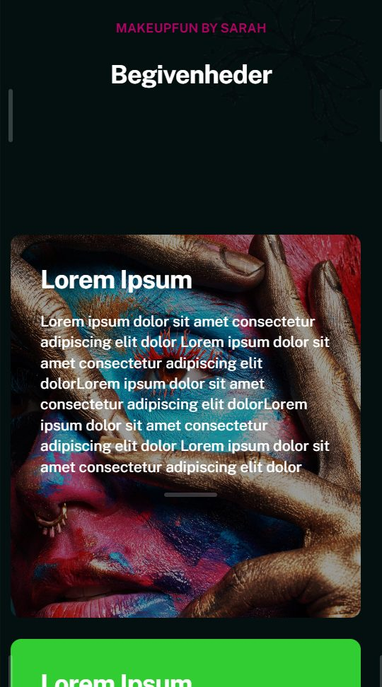
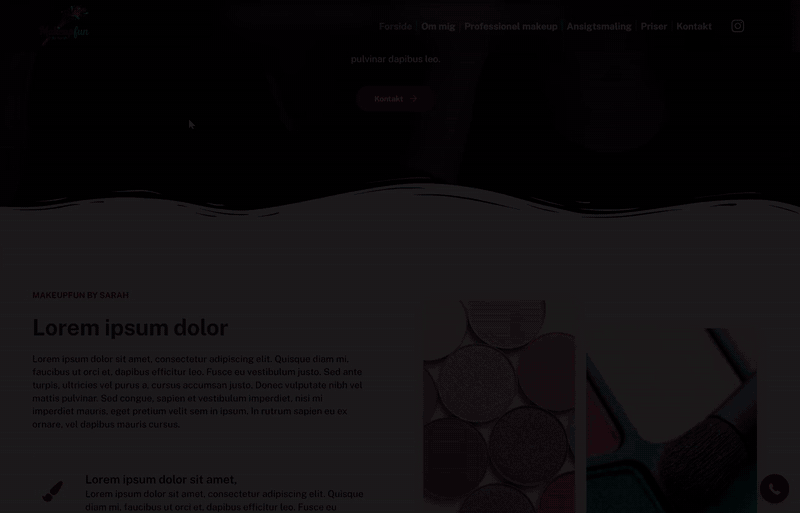

Real Client Websites
Designed the first version of websites for 30+ small Danish businesses in WordPress (Elementor Pro). Three are shown below: two live sites, and one design-stage project built around a brief that asked for two opposite tones.
Joraliv
Joraliv is run by family therapists who previously worked in the public sector before going independent. Growing their private client base was a strategic goal, so the site needed to represent both "Offentligt" (public) and "Private" services with equal visual weight. I kept the earthy tone of their existing brand and featured their municipality partner logos on the homepage to build trust with public-sector leads across their service area in Zealand.






Din Jordemoder
This wasn't a first draft — the site already existed, and the client came back with feedback that the visual style felt inconsistent, especially around image tone and mobile layout priority. I applied a warm, cohesive filter across the site's photography, restructured the mobile layout to prioritize key content, and reorganized a few sections to better match how she talks about her services.





Makeupfun by Sarah
The client's brief asked for two things at once: "clean, professional, minimalistic" and "colorful, bold, childish/playful". Instead of picking one, I varied the tone on purpose, with some pages clean and modern and others bold and playful: bold event cards, a star-review layout and photography-led sections. I reviewed this approach with the agency's developer, who approved it.




Three clients, three visual languages — from bold and playful (Makeupfun) to calm and personal (Din Jordemoder). The usual process: brief → style direction → responsive first version → client feedback → live site (where the client moved forward).